Summary
Last updated: 2024-10-20
Checks: 6 1
Knit directory: Getting_started/
This reproducible R Markdown analysis was created with workflowr (version 1.7.1). The Checks tab describes the reproducibility checks that were applied when the results were created. The Past versions tab lists the development history.
Great! Since the R Markdown file has been committed to the Git repository, you know the exact version of the code that produced these results.
Great job! The global environment was empty. Objects defined in the global environment can affect the analysis in your R Markdown file in unknown ways. For reproduciblity it’s best to always run the code in an empty environment.
The command set.seed(20240712) was run prior to running the code in the R Markdown file. Setting a seed ensures that any results that rely on randomness, e.g. subsampling or permutations, are reproducible.
Great job! Recording the operating system, R version, and package versions is critical for reproducibility.
Nice! There were no cached chunks for this analysis, so you can be confident that you successfully produced the results during this run.
Using absolute paths to the files within your workflowr project makes it difficult for you and others to run your code on a different machine. Change the absolute path(s) below to the suggested relative path(s) to make your code more reproducible.
| absolute | relative |
|---|---|
| /project/xuanyao/jiaming/Getting_started/output/calibration_power_t_10000_no_approximation_2.csv | output/calibration_power_t_10000_no_approximation_2.csv |
| /project/xuanyao/jiaming/Getting_started/output/calibration_power_t_2000_use_approximation_2.csv | output/calibration_power_t_2000_use_approximation_2.csv |
| /project/xuanyao/jiaming/Getting_started/output/calibration_power_include_trans_t_2000_use_approximation_rank.csv | output/calibration_power_include_trans_t_2000_use_approximation_rank.csv |
| /project/xuanyao/jiaming/Getting_started/output/calibration_power_include_trans_t_2000_use_approximation_rank_normalized.csv | output/calibration_power_include_trans_t_2000_use_approximation_rank_normalized.csv |
| /project/xuanyao/jiaming/Getting_started/output/calibration_power_include_trans_t_2000_use_approximation_log.csv | output/calibration_power_include_trans_t_2000_use_approximation_log.csv |
| /project/xuanyao/jiaming/Getting_started/output/calibration_power_include_trans_pval_wilcoxon_2000_use_approximation_left.csv | output/calibration_power_include_trans_pval_wilcoxon_2000_use_approximation_left.csv |
| /project/xuanyao/jiaming/Getting_started/output/calibration_power_include_trans_t_2000_use_approximation_twoside.csv | output/calibration_power_include_trans_t_2000_use_approximation_twoside.csv |
| /project/xuanyao/jiaming/Getting_started/output/test_rank_wilcox.csv | output/test_rank_wilcox.csv |
| /project/xuanyao/jiaming/Getting_started/output/power_include_trans_t_2000_use_approximation.csv | output/power_include_trans_t_2000_use_approximation.csv |
| /project/xuanyao/jiaming/Getting_started/output/t_test_on_whole_dataset.csv | output/t_test_on_whole_dataset.csv |
| /project/xuanyao/jiaming/Getting_started/output/t_test_on_whole_dataset_author_threshold.csv | output/t_test_on_whole_dataset_author_threshold.csv |
| /project/xuanyao/jiaming/Getting_started/output/both_trans_author_threshold/results_run_discovery_analysis.rds | output/both_trans_author_threshold/results_run_discovery_analysis.rds |
Great! You are using Git for version control. Tracking code development and connecting the code version to the results is critical for reproducibility.
The results in this page were generated with repository version fc1169d. See the Past versions tab to see a history of the changes made to the R Markdown and HTML files.
Note that you need to be careful to ensure that all relevant files for the analysis have been committed to Git prior to generating the results (you can use wflow_publish or wflow_git_commit). workflowr only checks the R Markdown file, but you know if there are other scripts or data files that it depends on. Below is the status of the Git repository when the results were generated:
Ignored files:
Ignored: .Rhistory
Ignored: .Rproj.user/
Ignored: analysis/figure/
Ignored: analysis/job-info.err
Ignored: analysis/job-info.out
Ignored: analysis/run.sh
Ignored: analysis/run_R.sh
Untracked files:
Untracked: analysis/sceptre_singleton.R
Untracked: analysis/sceptre_singleton.Rmd
Untracked: analysis/sceptre_threshold.Rmd
Untracked: code/fit_skew_normal.cpp
Untracked: code/job-info-1.err
Untracked: code/job-info-1.out
Untracked: code/job-info-2.err
Untracked: code/job-info-2.out
Untracked: code/plot.pdf
Untracked: code/t_test.cpp
Untracked: code/t_test_time.R
Untracked: code/test_gene_module_reduced.R
Untracked: data/GDO_threshold/
Untracked: data/Homo_sapiens.GRCh38.112.gtf.gz
Untracked: data/STINGseq-v1_GDO/
Untracked: data/STINGseq-v1_HTO/
Untracked: data/STINGseq-v1_cDNA/
Untracked: data/filtered_keep_gene.gtf
Untracked: data/gene_module.txt
Untracked: data/gene_module_id.txt
Untracked: data/gene_module_threshold/
Untracked: data/gene_modules_id.rds
Untracked: data/msig_50_table_gene_per_row_immune_related.txt
Untracked: data/msig_50_table_immune_related.txt
Untracked: output/both_trans_author_threshold/
Untracked: output/calibration_power_include_trans_pval_wilcoxon_2000_use_approximation.csv
Untracked: output/calibration_power_include_trans_pval_wilcoxon_2000_use_approximation_left.csv
Untracked: output/calibration_power_include_trans_t_2000_use_approximation_twoside.csv
Untracked: output/sceptre_outputs/trans_mixture.txt
Untracked: output/sceptre_outputs_cis/
Untracked: output/sceptre_outputs_cis_singleton/
Untracked: output/sceptre_outputs_cis_threshold/
Untracked: output/sceptre_outputs_cis_threshold5/
Untracked: output/sceptre_outputs_trans_omit_NTC3_12/
Untracked: output/sceptre_outputs_trans_threshold/
Untracked: output/sceptre_outputs_trans_threshold_omit_NTC3_12/
Untracked: output/t_test_on_whole_dataset.csv
Untracked: output/t_test_on_whole_dataset_author_threshold.csv
Untracked: output/test_rank_wilcox.csv
Untracked: output/trans_singleton_threshold5/
Untracked: output/trans_singleton_threshold_author_omit/
Untracked: output/try_rcc/
Unstaged changes:
Modified: .gitignore
Modified: analysis/TATES.Rmd
Modified: analysis/_site.yml
Deleted: analysis/create_grna_target_data_frame.Rmd
Modified: analysis/qqplot.Rmd
Modified: analysis/sceptre.Rmd
Modified: analysis/sceptre_example.Rmd
Deleted: analysis/seurat_example.Rmd
Modified: analysis/summary.Rmd
Deleted: analysis/try_Knit.Rmd
Deleted: analysis/try_rcc.Rmd
Modified: code/job-info.err
Modified: code/job-info.out
Modified: code/plot.Rmd
Modified: code/run_R.sh
Modified: code/test_gene_module.Rmd
Deleted: output/sceptre_outputs/analysis_summary.txt
Note that any generated files, e.g. HTML, png, CSS, etc., are not included in this status report because it is ok for generated content to have uncommitted changes.
These are the previous versions of the repository in which changes were made to the R Markdown (analysis/plot.Rmd) and HTML (docs/plot.html) files. If you’ve configured a remote Git repository (see ?wflow_git_remote), click on the hyperlinks in the table below to view the files as they were in that past version.
| File | Version | Author | Date | Message |
|---|---|---|---|---|
| Rmd | fc1169d | jliucx | 2024-10-21 | compare the findings with paper |
| html | 481c9f6 | jliucx | 2024-10-06 | Build site. |
| Rmd | d94a790 | jliucx | 2024-10-06 | update ranked t, log t and normalized t |
| html | 8242fde | jliucx | 2024-10-06 | Build site. |
| Rmd | 0e40b6c | jliucx | 2024-10-06 | update ranked t, log t and normalized t |
| html | 0097970 | jliucx | 2024-10-03 | Build site. |
| html | 4413b88 | jliucx | 2024-10-03 | Build site. |
| Rmd | 815061e | jliucx | 2024-10-03 | update result 10.3 |
| html | f707435 | jliucx | 2024-10-03 | Build site. |
| Rmd | d29611d | jliucx | 2024-10-03 | update result 10.3 |
library(ggplot2)
library(dplyr)
Attaching package: 'dplyr'The following objects are masked from 'package:stats':
filter, lagThe following objects are masked from 'package:base':
intersect, setdiff, setequal, unionlibrary(readr)
directories <- "data/STINGseq-v1_GDO"
grna_target_data_frame <- data.frame(read_csv(paste0(directories,"/grna_target_data_frame.csv")))
── Column specification ────────────────────────────────────────────────────────
cols(
grna_id = col_character(),
grna_target = col_character(),
chr = col_character(),
start = col_double(),
end = col_double()
)gg_qqplot <- function(ps, ci = 0.95) {
n <- length(ps)
df <- data.frame(
observed = -log10(sort(ps)),
expected = -log10(ppoints(n)),
clower = -log10(qbeta(p = (1 - ci) / 2, shape1 = 1:n, shape2 = n:1)),
cupper = -log10(qbeta(p = (1 + ci) / 2, shape1 = 1:n, shape2 = n:1))
)
log10Pe <- expression(paste("Expected -log"[10], plain(P)))
log10Po <- expression(paste("Observed -log"[10], plain(P)))
ggplot(df) +
geom_ribbon(mapping = aes(x = expected, ymin = clower, ymax = cupper),
alpha = 0.1) +
geom_point(aes(expected, observed), size = 1.5, color="red") +
geom_abline(intercept = 0, slope = 1, alpha = 0.5) +
xlab(log10Pe) + ylab(log10Po)
}
p_t_10000_negative <- as.vector(as.matrix(read.csv("/project/xuanyao/jiaming/Getting_started/output/calibration_power_t_10000_no_approximation_2.csv", header = TRUE, row.names = 1))[13:24,])
p_t_2000_skn_negative <- as.vector(as.matrix(read.csv("/project/xuanyao/jiaming/Getting_started/output/calibration_power_t_2000_use_approximation_2.csv", header = TRUE, row.names = 1))[13:24,])
p_t_10000_positive <- as.vector(as.matrix(read.csv("/project/xuanyao/jiaming/Getting_started/output/calibration_power_t_10000_no_approximation_2.csv", header = TRUE, row.names = 1))[1:12,])
p_t_2000_skn_positive <- as.vector(as.matrix(read.csv("/project/xuanyao/jiaming/Getting_started/output/calibration_power_t_2000_use_approximation_2.csv", header = TRUE, row.names = 1))[1:12,])
p_t_rank_2000_negative <- as.vector(as.matrix(read.csv("/project/xuanyao/jiaming/Getting_started/output/calibration_power_include_trans_t_2000_use_approximation_rank.csv", header = TRUE, row.names = 1))[23:34,])
p_t_rank_2000_positive <- as.vector(as.matrix(read.csv("/project/xuanyao/jiaming/Getting_started/output/calibration_power_include_trans_t_2000_use_approximation_rank.csv", header = TRUE, row.names = 1))[1:22,])
p_t_rank_normalize_2000_negative <- as.vector(as.matrix(read.csv("/project/xuanyao/jiaming/Getting_started/output/calibration_power_include_trans_t_2000_use_approximation_rank_normalized.csv", header = TRUE, row.names = 1))[23:34,])
p_t_rank_normalize_2000_positive <- as.vector(as.matrix(read.csv("/project/xuanyao/jiaming/Getting_started/output/calibration_power_include_trans_t_2000_use_approximation_rank_normalized.csv", header = TRUE, row.names = 1))[1:22,])
p_t_log_2000_negative <- as.vector(as.matrix(read.csv("/project/xuanyao/jiaming/Getting_started/output/calibration_power_include_trans_t_2000_use_approximation_log.csv", header = TRUE, row.names = 1))[23:34,])
p_t_log_2000_positive <- as.vector(as.matrix(read.csv("/project/xuanyao/jiaming/Getting_started/output/calibration_power_include_trans_t_2000_use_approximation_log.csv", header = TRUE, row.names = 1))[1:22,])
p_wilcox_p_2000_negative <- as.vector(as.matrix(read.csv("/project/xuanyao/jiaming/Getting_started/output/calibration_power_include_trans_pval_wilcoxon_2000_use_approximation_left.csv", header = TRUE, row.names = 1))[23:34,])
p_wilcox_p_2000_positive <- as.vector(as.matrix(read.csv("/project/xuanyao/jiaming/Getting_started/output/calibration_power_include_trans_pval_wilcoxon_2000_use_approximation_left.csv", header = TRUE, row.names = 1))[1:22,])
p_new_positive <- as.vector(as.matrix(read.csv("/project/xuanyao/jiaming/Getting_started/output/calibration_power_include_trans_t_2000_use_approximation_twoside.csv", header = TRUE, row.names = 1))[1:22,])
p_new_negative <- as.vector(as.matrix(read.csv("/project/xuanyao/jiaming/Getting_started/output/calibration_power_include_trans_t_2000_use_approximation_twoside.csv", header = TRUE, row.names = 1))[23:34,])
p_test <- as.vector(as.matrix(read.csv("/project/xuanyao/jiaming/Getting_started/output/calibration_power_include_trans_pval_wilcoxon_2000_use_approximation_left.csv", header = TRUE, row.names = 1))[1:22,])
p_test_2 <- as.vector(as.matrix(read.csv("/project/xuanyao/jiaming/Getting_started/output/test_rank_wilcox.csv", header = TRUE, row.names = 1))[1:22,])Runtime and peakRAM comparison
Type Perturbation Null.statistics Running.time Peak.RAM
1 t test (No approximation) 24 10000 6128s 124150MB
2 t test (Skew normal) 24 2000 6245s 22324MBCalibration check (t-test)
Calibration of NT grna pval estimated from 10000 null statistics (No approximation)
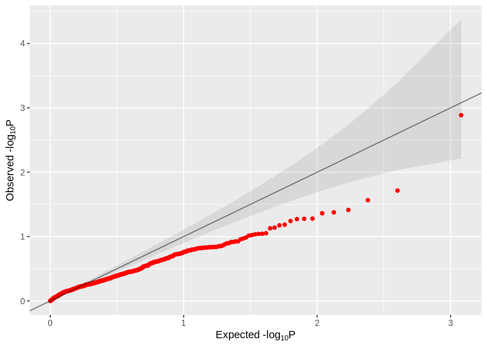
| Version | Author | Date |
|---|---|---|
| f707435 | jliucx | 2024-10-03 |
Calibration of NT grna pval estimated from 2000 null statistics with skew t approximation
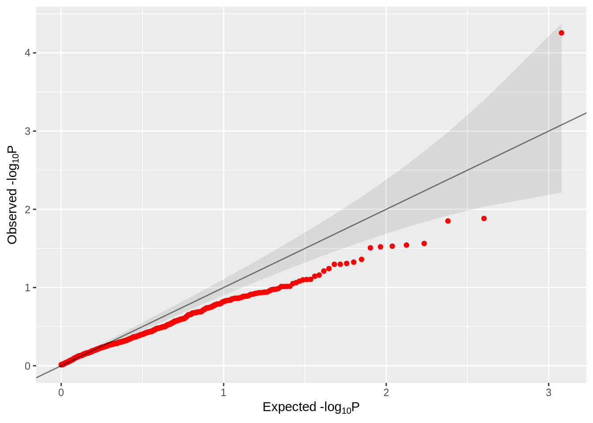
| Version | Author | Date |
|---|---|---|
| f707435 | jliucx | 2024-10-03 |
Calibration of NT grna pval estimated from 2000 null statistics with skew t approximation（normalized rank-based t test）

Calibration of NT grna pval estimated from 2000 null statistics with skew t approximation（log transformed t test）
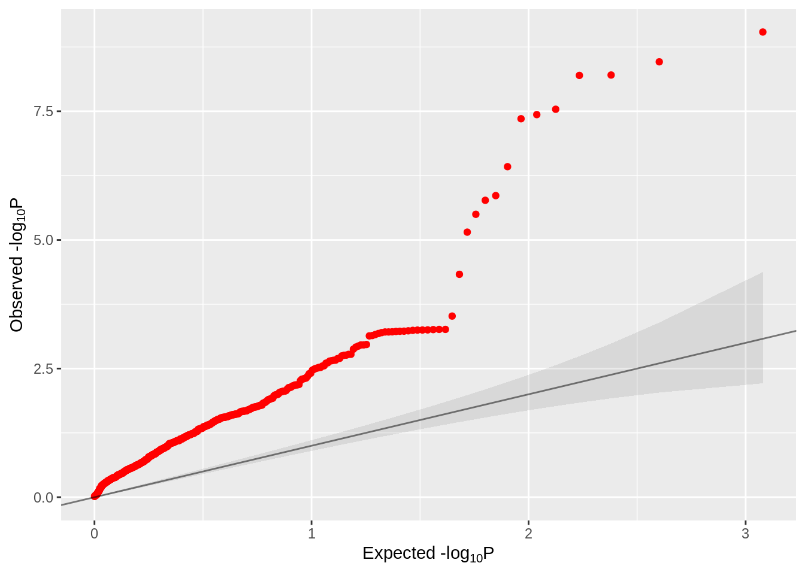
Calibration of NT grna pval estimated from 2000 null statistics with skew t approximation（rank-based t test）

gg_qqplot(p_wilcox_p_2000_negative)
Power check (t-test)
Power of NT grna pval estimated from 10000 null statistics with no approximation
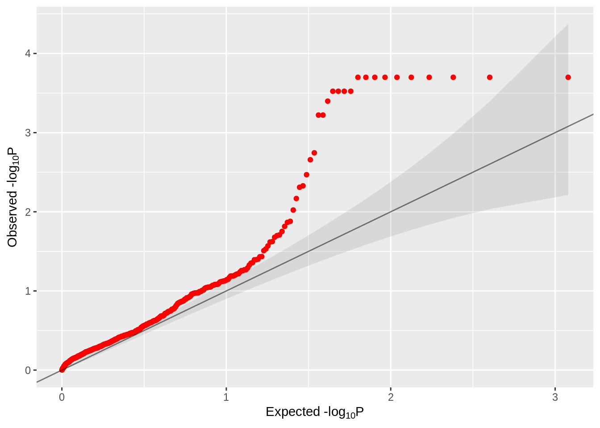
Power of NT grna pval estimated from 2000 null statistics with skew t approximation

Power of NT grna pval estimated from 2000 null statistics with skew t approximation (include trans-effect SNPs)
gg_qqplot(as.vector(as.matrix(read.csv("/project/xuanyao/jiaming/Getting_started/output/power_include_trans_t_2000_use_approximation.csv", header = TRUE, row.names = 1))))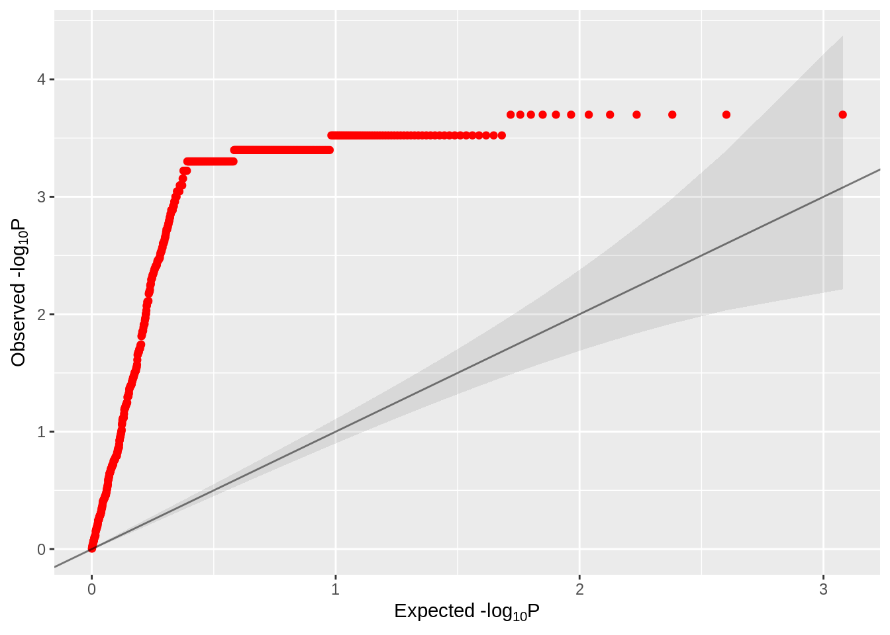
Power of NT grna pval estimated from 2000 null statistics with skew t approximation（normalized rank-based t test）
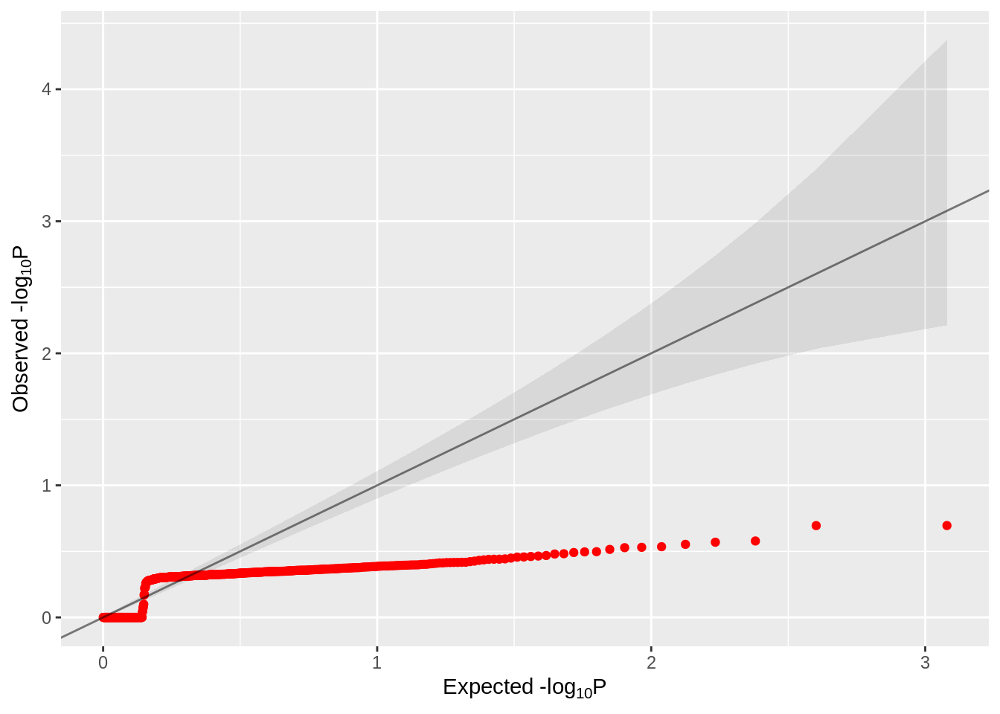
Power of NT grna pval estimated from 2000 null statistics with skew t approximation（log transformed t test）
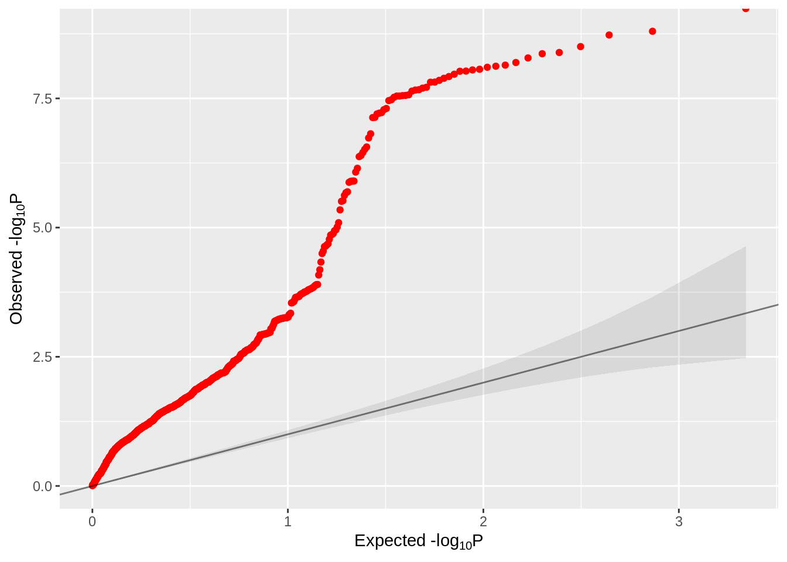
Power of NT grna pval estimated from 2000 null statistics with skew t approximation（rank-based t test）

gg_qqplot(p_wilcox_p_2000_positive)
Plots comparing pval from no approximation and skew normal approximation
# Binding the vectors
p_10000 <- c(p_t_10000_negative, p_t_10000_positive)
p_skn_2000 <- c(p_t_2000_skn_negative, p_t_2000_skn_positive)
# Scatter plot of bind_10000 against bind_2000
plot(p_10000, p_skn_2000,
xlab = "p values of 10000 null statistics with no approximation",
ylab = "p values of 2000 null statistics with skewed t",
main = "Skew t approximation (2000 null statistics)",
pch = 16, # pch = 16 gives solid circles
cex = 0.6, # cex < 1 reduces the size of the points,
col = "red"
)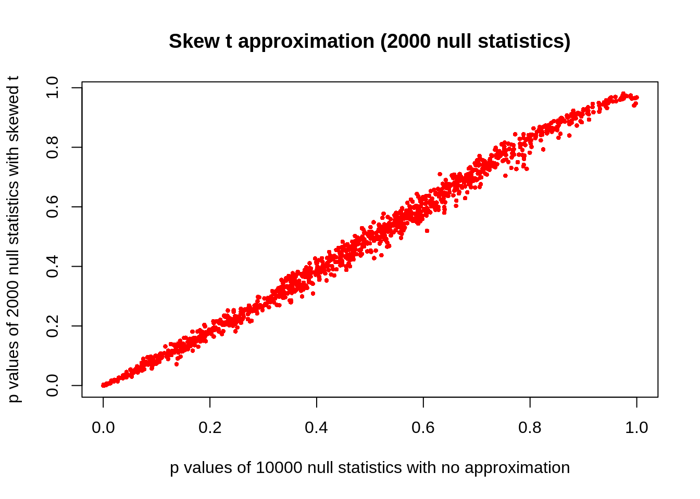
| Version | Author | Date |
|---|---|---|
| 8242fde | jliucx | 2024-10-06 |
Including SNPs that have trans effect as positive control
Original positive control (12*50 pvals)
p_t_10000_positive_include_trans <- as.vector(as.matrix(read.csv("/project/xuanyao/jiaming/Getting_started/output/power_include_trans_t_2000_use_approximation.csv", header = TRUE, row.names = 1))[11:22,])
gg_qqplot(p_t_10000_positive_include_trans)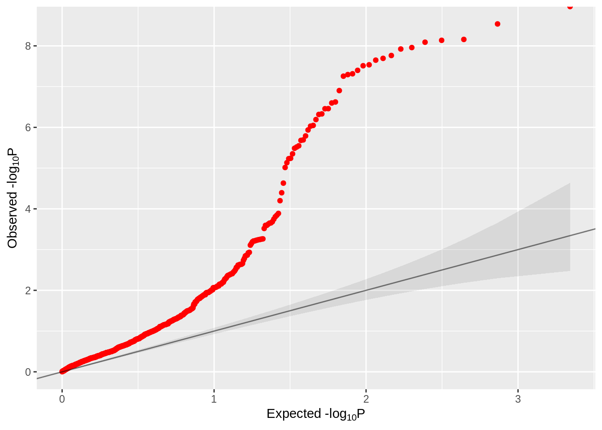
| Version | Author | Date |
|---|---|---|
| 8242fde | jliucx | 2024-10-06 |
Positive control of SNPs that have trans effect only (10*50 pvals)
p_t_10000_positive_include_trans <- as.vector(as.matrix(read.csv("/project/xuanyao/jiaming/Getting_started/output/power_include_trans_t_2000_use_approximation.csv", header = TRUE, row.names = 1))[1:10,])
gg_qqplot(p_t_10000_positive_include_trans)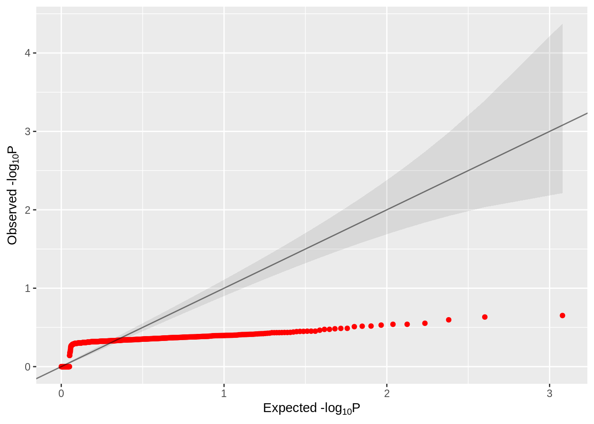
| Version | Author | Date |
|---|---|---|
| 8242fde | jliucx | 2024-10-06 |
Positive control after including SNPs that have trans effect (22*50 pvals)
p_t_10000_positive_include_trans <- as.vector(as.matrix(read.csv("/project/xuanyao/jiaming/Getting_started/output/power_include_trans_t_2000_use_approximation.csv", header = TRUE, row.names = 1)))
gg_qqplot(p_t_10000_positive_include_trans)
Calibration check (wilcoxon-test)
I use wilcoxon p value as statistics, and find the left-tail probability to calculate p-value.
p_wilcox_negative <- as.vector(as.matrix(read.csv("/project/xuanyao/jiaming/Getting_started/output/calibration_power_include_trans_pval_wilcoxon_2000_use_approximation_left.csv", header = TRUE, row.names = 1))[23:34,])
gg_qqplot(p_wilcox_negative)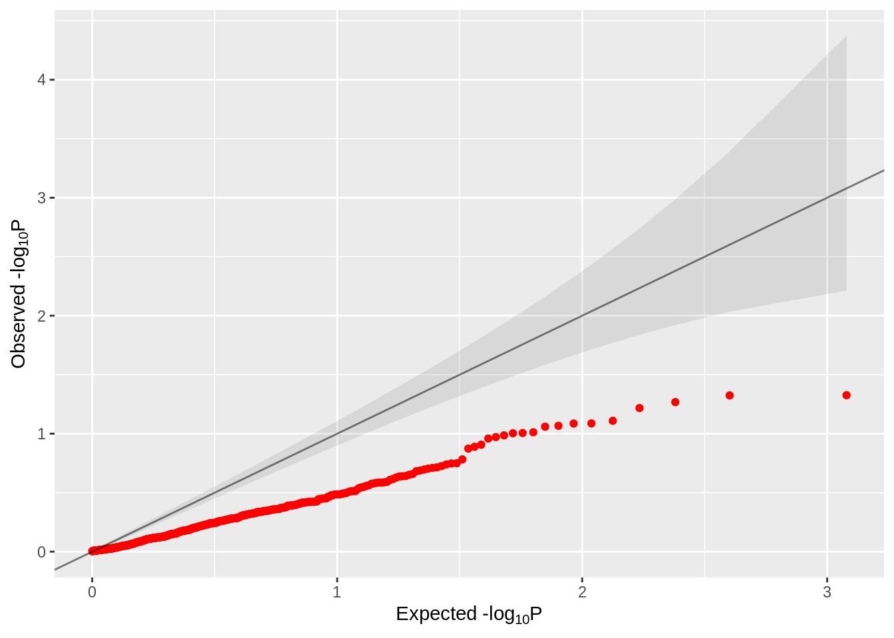
Power check (wilcoxon-test)
p_wilcox_positive <- as.vector(as.matrix(read.csv("/project/xuanyao/jiaming/Getting_started/output/calibration_power_include_trans_pval_wilcoxon_2000_use_approximation_left.csv", header = TRUE, row.names = 1))[1:22,])
gg_qqplot(p_wilcox_positive)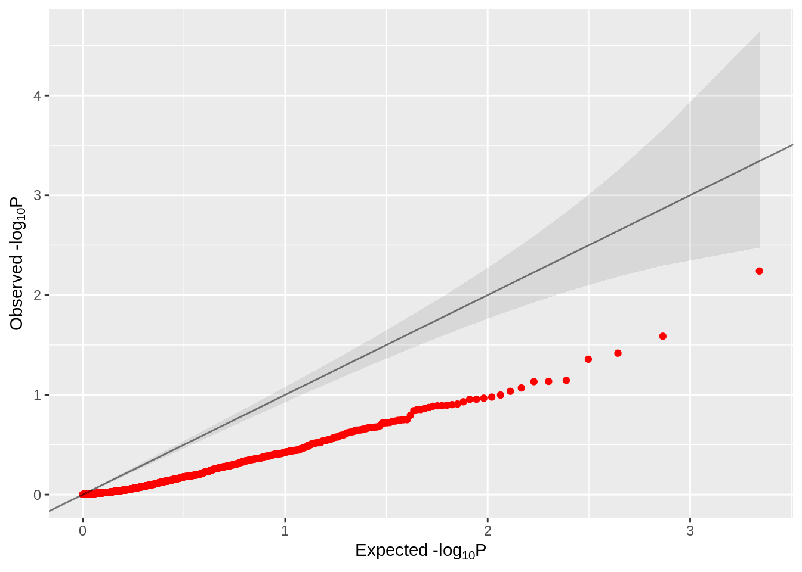
On whole dataset:
gene_modules <- readRDS("data/gene_modules_id.rds")
knitr::include_graphics("images/run_time.png", error = FALSE)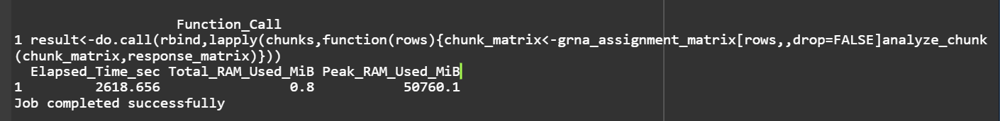
| Version | Author | Date |
|---|---|---|
| fc1169d | jliucx | 2024-10-21 |
use mixture model to assign gRNA to cells
p_test_positive <- as.vector(as.matrix(read.csv("/project/xuanyao/jiaming/Getting_started/output/t_test_on_whole_dataset.csv", header = TRUE, row.names = 1))[c(87,88,117,118,125,126,151,152,165,166,177:188),])
gg_qqplot(p_test_positive)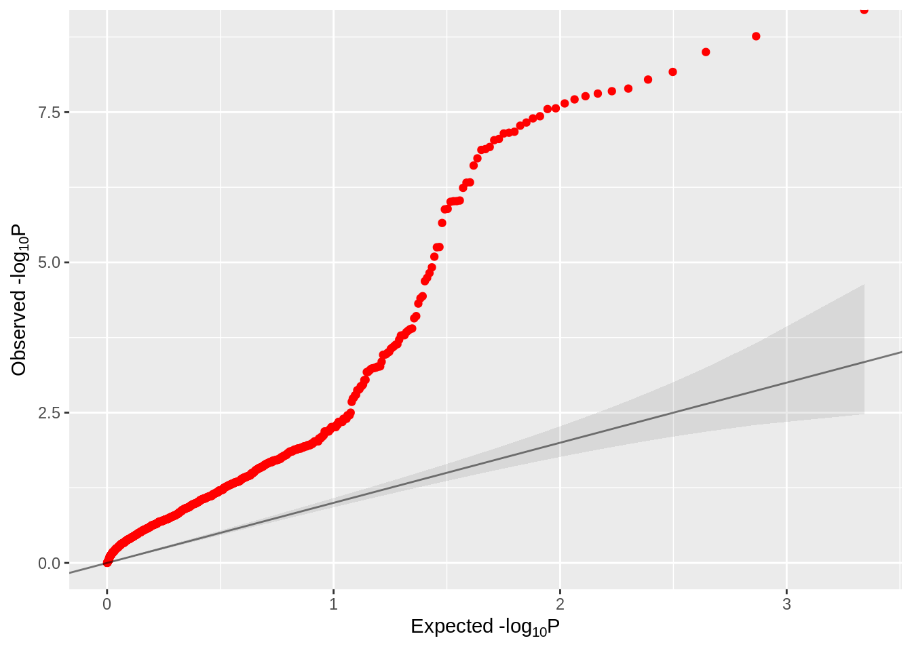
p_test_negative <- as.vector(as.matrix(read.csv("/project/xuanyao/jiaming/Getting_started/output/t_test_on_whole_dataset.csv", header = TRUE, row.names = 1))[189:200,])
gg_qqplot(p_test_negative)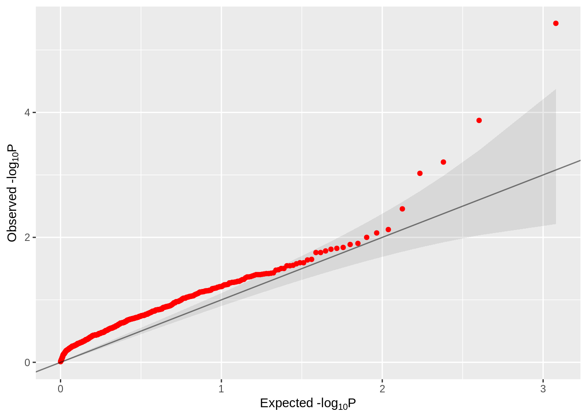
Now we use the significant signals from sceptre output to construct grna-to-gene-module positive control pairs.
results_run_discovery_analysis <- readRDS("/project/xuanyao/jiaming/Getting_started/output/both_trans_author_threshold/results_run_discovery_analysis.rds")
results_run_discovery_analysis[1:10,c(1,2,7)] response_id grna_id p_value
1 ENSG00000135486 SNP-83_1 1.180013e-126
2 ENSG00000109943 CD52-2 1.772732e-125
3 ENSG00000130203 SNP-62_2 1.162737e-116
4 ENSG00000248098 SNP-70_1 4.753347e-74
5 ENSG00000119912 SNP-44_1 1.246293e-65
6 ENSG00000158669 SNP-60_2 3.560838e-64
7 ENSG00000204390 CD52-2 5.804028e-54
8 ENSG00000066583 SNP-62_2 2.493081e-53
9 ENSG00000129167 SNP-62_2 1.187078e-51
10 ENSG00000197465 SNP-62_2 3.382718e-51module_results <- list()
# Iterate over each response_id from results_run_discovery_analysis
for (i in seq_len(nrow(results_run_discovery_analysis[1:1141,]))) {
response_id <- results_run_discovery_analysis$response_id[i]
grna_id <- results_run_discovery_analysis$grna_id[i]
# Find the modules that contain the response_id
containing_modules <- names(gene_modules)[sapply(gene_modules, function(module) response_id %in% module)]
# Store the result for this response_id and grna_id
module_results[[i]] <- data.frame(response_id = response_id, grna_id = grna_id, module = containing_modules)
}
# Combine all results into a single data frame
module_results_df_2 <- do.call(rbind, module_results)
module_results <- module_results_df_2[,2:3] %>%
distinct()
module_results[1:10,] grna_id module
1 SNP-83_1 HALLMARK_MYC_TARGETS_V1
2 CD52-2 HALLMARK_ALLOGRAFT_REJECTION
3 SNP-62_2 HALLMARK_ADIPOGENESIS
4 SNP-62_2 HALLMARK_XENOBIOTIC_METABOLISM
5 SNP-70_1 HALLMARK_ADIPOGENESIS
6 SNP-70_1 HALLMARK_OXIDATIVE_PHOSPHORYLATION
7 SNP-44_1 HALLMARK_SPERMATOGENESIS
8 SNP-44_1 HALLMARK_PEROXISOME
9 SNP-60_2 HALLMARK_ADIPOGENESIS
10 CD52-2 HALLMARK_SPERMATOGENESISDiscoveries on gene sets
p_value <- as.numeric(as.matrix(result_gene_module[1:176,-1]))
# Step 2: Apply BH correction
p_values_adjusted <- p.adjust(p_value, method = "BH")
# Step 3: Reshape the adjusted p-values back into the original matrix shape (same as result_gene_module)
p_values_matrix <- matrix(p_values_adjusted, nrow = 176, ncol = ncol(result_gene_module) - 1)
# Step 4: Identify significant pairs (adjusted p-values < 0.05)
significant_pairs <- p_values_matrix < 0.05
# Extract the significant pairs (gene names and modules)
significant_genes <- result_gene_module$X1[row(significant_pairs)[significant_pairs]]
significant_modules <- colnames(result_gene_module)[-1][col(significant_pairs)[significant_pairs]]
# Combine significant pairs into a data frame
significant_results <- data.frame(grna = significant_genes, module = significant_modules, adjusted_p_value = p_values_matrix[significant_pairs])
# Show the significant results
significant_results grna module adjusted_p_value
1 SNP-63_1 HALLMARK_HYPOXIA 2.724429e-03
2 SNP-63_1 HALLMARK_G2M_CHECKPOINT 1.114311e-04
3 SNP-63_1 HALLMARK_ADIPOGENESIS 1.139027e-02
4 SNP-63_1 HALLMARK_ESTROGEN_RESPONSE_EARLY 6.893277e-05
5 SNP-63_1 HALLMARK_MYOGENESIS 7.987539e-03
6 SNP-63_1 HALLMARK_INTERFERON_GAMMA_RESPONSE 8.906502e-05
7 SNP-63_1 HALLMARK_APICAL_JUNCTION 4.091720e-03
8 SNP-63_1 HALLMARK_COMPLEMENT 0.000000e+00
9 SNP-63_2 HALLMARK_COMPLEMENT 4.129643e-02
10 SNP-76_2 HALLMARK_COMPLEMENT 1.509104e-05
11 SNP-63_1 HALLMARK_MTORC1_SIGNALING 5.816951e-04
12 SNP-63_1 HALLMARK_MYC_TARGETS_V1 2.364896e-03
13 SNP-63_2 HALLMARK_EPITHELIAL_MESENCHYMAL_TRANSITION 1.509104e-05
14 SNP-63_1 HALLMARK_INFLAMMATORY_RESPONSE 1.163178e-04
15 SNP-63_1 HALLMARK_XENOBIOTIC_METABOLISM 2.147303e-02
16 SNP-63_1 HALLMARK_OXIDATIVE_PHOSPHORYLATION 0.000000e+00
17 SNP-63_1 HALLMARK_GLYCOLYSIS 4.292874e-02
18 SNP-63_1 HALLMARK_ALLOGRAFT_REJECTION 1.132732e-05
19 SNP-63_1 HALLMARK_MITOTIC_SPINDLE 1.327047e-05
20 SNP-63_1 HALLMARK_IL2_STAT5_SIGNALING 1.780815e-03
21 SNP-63_1 HALLMARK_APOPTOSIS 8.906502e-05
22 SNP-63_1 HALLMARK_FATTY_ACID_METABOLISM 8.906502e-05
23 SNP-63_1 HALLMARK_UV_RESPONSE_UP 2.549596e-05
24 SNP-63_1 HALLMARK_DNA_REPAIR 2.850123e-05
25 SNP-63_1 HALLMARK_UV_RESPONSE_DN 2.549596e-05
26 SNP-63_1 HALLMARK_COAGULATION 0.000000e+00
27 SNP-63_2 HALLMARK_COAGULATION 8.906502e-05
28 SNP-76_2 HALLMARK_COAGULATION 1.509104e-05
29 SNP-63_1 HALLMARK_PEROXISOME 3.494961e-05
30 SNP-63_1 HALLMARK_INTERFERON_ALPHA_RESPONSE 1.798851e-05
31 SNP-44_2 HALLMARK_IL6_JAK_STAT3_SIGNALING 9.570327e-03
32 SNP-63_1 HALLMARK_CHOLESTEROL_HOMEOSTASIS 4.608315e-02
33 SNP-63_1 HALLMARK_MYC_TARGETS_V2 1.505608e-04
34 SNP-63_1 HALLMARK_REACTIVE_OXYGEN_SPECIES_PATHWAY 0.000000e+00
35 SNP-63_1 HALLMARK_APICAL_SURFACE 4.859373e-02
36 SNP-63_2 HALLMARK_APICAL_SURFACE 4.258292e-02
37 SNP-63_1 HALLMARK_NOTCH_SIGNALING 1.392135e-03significant_results_with_target <- significant_results %>%
left_join(grna_target_data_frame, by = c("grna" = "grna_id"))
# Show the updated significant results with the grna_target column
(significant_result<-significant_results_with_target[,c(1,2,4,3)]) grna module grna_target
1 SNP-63_1 HALLMARK_HYPOXIA rs524137
2 SNP-63_1 HALLMARK_G2M_CHECKPOINT rs524137
3 SNP-63_1 HALLMARK_ADIPOGENESIS rs524137
4 SNP-63_1 HALLMARK_ESTROGEN_RESPONSE_EARLY rs524137
5 SNP-63_1 HALLMARK_MYOGENESIS rs524137
6 SNP-63_1 HALLMARK_INTERFERON_GAMMA_RESPONSE rs524137
7 SNP-63_1 HALLMARK_APICAL_JUNCTION rs524137
8 SNP-63_1 HALLMARK_COMPLEMENT rs524137
9 SNP-63_2 HALLMARK_COMPLEMENT rs524137
10 SNP-76_2 HALLMARK_COMPLEMENT rs73660574
11 SNP-63_1 HALLMARK_MTORC1_SIGNALING rs524137
12 SNP-63_1 HALLMARK_MYC_TARGETS_V1 rs524137
13 SNP-63_2 HALLMARK_EPITHELIAL_MESENCHYMAL_TRANSITION rs524137
14 SNP-63_1 HALLMARK_INFLAMMATORY_RESPONSE rs524137
15 SNP-63_1 HALLMARK_XENOBIOTIC_METABOLISM rs524137
16 SNP-63_1 HALLMARK_OXIDATIVE_PHOSPHORYLATION rs524137
17 SNP-63_1 HALLMARK_GLYCOLYSIS rs524137
18 SNP-63_1 HALLMARK_ALLOGRAFT_REJECTION rs524137
19 SNP-63_1 HALLMARK_MITOTIC_SPINDLE rs524137
20 SNP-63_1 HALLMARK_IL2_STAT5_SIGNALING rs524137
21 SNP-63_1 HALLMARK_APOPTOSIS rs524137
22 SNP-63_1 HALLMARK_FATTY_ACID_METABOLISM rs524137
23 SNP-63_1 HALLMARK_UV_RESPONSE_UP rs524137
24 SNP-63_1 HALLMARK_DNA_REPAIR rs524137
25 SNP-63_1 HALLMARK_UV_RESPONSE_DN rs524137
26 SNP-63_1 HALLMARK_COAGULATION rs524137
27 SNP-63_2 HALLMARK_COAGULATION rs524137
28 SNP-76_2 HALLMARK_COAGULATION rs73660574
29 SNP-63_1 HALLMARK_PEROXISOME rs524137
30 SNP-63_1 HALLMARK_INTERFERON_ALPHA_RESPONSE rs524137
31 SNP-44_2 HALLMARK_IL6_JAK_STAT3_SIGNALING rs12784232
32 SNP-63_1 HALLMARK_CHOLESTEROL_HOMEOSTASIS rs524137
33 SNP-63_1 HALLMARK_MYC_TARGETS_V2 rs524137
34 SNP-63_1 HALLMARK_REACTIVE_OXYGEN_SPECIES_PATHWAY rs524137
35 SNP-63_1 HALLMARK_APICAL_SURFACE rs524137
36 SNP-63_2 HALLMARK_APICAL_SURFACE rs524137
37 SNP-63_1 HALLMARK_NOTCH_SIGNALING rs524137
adjusted_p_value
1 2.724429e-03
2 1.114311e-04
3 1.139027e-02
4 6.893277e-05
5 7.987539e-03
6 8.906502e-05
7 4.091720e-03
8 0.000000e+00
9 4.129643e-02
10 1.509104e-05
11 5.816951e-04
12 2.364896e-03
13 1.509104e-05
14 1.163178e-04
15 2.147303e-02
16 0.000000e+00
17 4.292874e-02
18 1.132732e-05
19 1.327047e-05
20 1.780815e-03
21 8.906502e-05
22 8.906502e-05
23 2.549596e-05
24 2.850123e-05
25 2.549596e-05
26 0.000000e+00
27 8.906502e-05
28 1.509104e-05
29 3.494961e-05
30 1.798851e-05
31 9.570327e-03
32 4.608315e-02
33 1.505608e-04
34 0.000000e+00
35 4.859373e-02
36 4.258292e-02
37 1.392135e-03unique(significant_result$grna_target)[1] "rs524137" "rs73660574" "rs12784232"use mixture model to assign grna to cell
# result_gene_module <- read_csv("output/t_test_on_whole_dataset_author_threshold.csv")
result_gene_module <- read_csv("output/t_test_on_whole_dataset.csv")Warning: Missing column names filled in: 'X1' [1]
── Column specification ────────────────────────────────────────────────────────
cols(
.default = col_double(),
X1 = col_character()
)
ℹ Use `spec()` for the full column specifications.p_values <- c()
# Iterate over each row in module_results_df_2
for (i in seq_len(nrow(module_results))) {
grna_id <- module_results$grna_id[i]
module <- module_results$module[i]
# Find the row in result_gene_module corresponding to the grna_id
row_index <- which(result_gene_module$X1 == grna_id)
# Find the column corresponding to the module
column_index <- which(names(result_gene_module) == module)
# Get the corresponding p-value
if (length(row_index) > 0 && length(column_index) > 0) {
p_value <- result_gene_module[row_index, column_index]
} else {
p_value <- NA # If no match is found
}
# Append the p-value to the vector
p_values <- c(p_values, p_value)
}
gg_qqplot(unlist(p_values))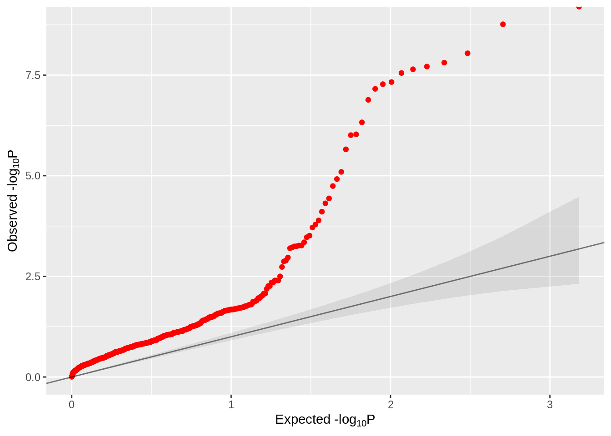
p_value <- as.numeric(as.matrix(result_gene_module[1:176,-1]))
# Step 2: Apply BH correction
p_values_adjusted <- p.adjust(p_value, method = "BH")
# Step 3: Reshape the adjusted p-values back into the original matrix shape (same as result_gene_module)
p_values_matrix <- matrix(p_values_adjusted, nrow = 176, ncol = ncol(result_gene_module) - 1)
# Step 4: Identify significant pairs (adjusted p-values < 0.05)
significant_pairs <- p_values_matrix < 0.05
# Extract the significant pairs (gene names and modules)
significant_genes <- result_gene_module$X1[row(significant_pairs)[significant_pairs]]
significant_modules <- colnames(result_gene_module)[-1][col(significant_pairs)[significant_pairs]]
# Combine significant pairs into a data frame
significant_results <- data.frame(grna = significant_genes, module = significant_modules, adjusted_p_value = p_values_matrix[significant_pairs])
# Show the significant results
significant_results grna module adjusted_p_value
1 SNP-44_2 HALLMARK_TNFA_SIGNALING_VIA_NFKB 9.270946e-06
2 SNP-63_1 HALLMARK_HYPOXIA 4.074903e-03
3 SNP-63_2 HALLMARK_HYPOXIA 1.875647e-04
4 SNP-63_1 HALLMARK_G2M_CHECKPOINT 8.031072e-03
5 SNP-63_1 HALLMARK_ESTROGEN_RESPONSE_EARLY 5.883611e-04
6 SNP-63_1 HALLMARK_MYOGENESIS 5.209172e-05
7 SNP-63_2 HALLMARK_MYOGENESIS 7.100231e-05
8 SNP-27_1 HALLMARK_INTERFERON_GAMMA_RESPONSE 1.163661e-05
9 SNP-63_1 HALLMARK_INTERFERON_GAMMA_RESPONSE 2.875340e-03
10 SNP-63_1 HALLMARK_APICAL_JUNCTION 1.595493e-04
11 SNP-63_1 HALLMARK_COMPLEMENT 2.987026e-02
12 SNP-63_2 HALLMARK_COMPLEMENT 2.781916e-04
13 SNP-63_1 HALLMARK_MTORC1_SIGNALING 1.678987e-05
14 SNP-63_1 HALLMARK_E2F_TARGETS 0.000000e+00
15 SNP-63_1 HALLMARK_MYC_TARGETS_V1 1.811814e-05
16 SNP-63_1 HALLMARK_EPITHELIAL_MESENCHYMAL_TRANSITION 2.520655e-02
17 SNP-63_2 HALLMARK_EPITHELIAL_MESENCHYMAL_TRANSITION 1.409064e-03
18 SNP-65_1 HALLMARK_EPITHELIAL_MESENCHYMAL_TRANSITION 3.154095e-02
19 SNP-63_1 HALLMARK_INFLAMMATORY_RESPONSE 1.640519e-02
20 SNP-63_1 HALLMARK_XENOBIOTIC_METABOLISM 2.781916e-04
21 SNP-63_1 HALLMARK_GLYCOLYSIS 3.403628e-02
22 SNP-63_2 HALLMARK_GLYCOLYSIS 3.484208e-03
23 SNP-63_1 HALLMARK_P53_PATHWAY 3.313770e-05
24 SNP-63_2 HALLMARK_P53_PATHWAY 3.532752e-04
25 SNP-44_2 HALLMARK_HEME_METABOLISM 2.710147e-02
26 SNP-83_2 HALLMARK_HEME_METABOLISM 1.163661e-05
27 SNP-83_2 HALLMARK_KRAS_SIGNALING_UP 1.678987e-05
28 SNP-44_2 HALLMARK_KRAS_SIGNALING_DN 3.879002e-05
29 SNP-63_1 HALLMARK_FATTY_ACID_METABOLISM 7.599962e-06
30 SNP-63_2 HALLMARK_FATTY_ACID_METABOLISM 3.879002e-05
31 SNP-63_1 HALLMARK_UV_RESPONSE_UP 1.163661e-05
32 SNP-63_1 HALLMARK_COAGULATION 1.963639e-03
33 SNP-63_2 HALLMARK_COAGULATION 2.781916e-04
34 SNP-76_2 HALLMARK_COAGULATION 4.039679e-02
35 SNP-63_1 HALLMARK_UNFOLDED_PROTEIN_RESPONSE 2.750545e-05
36 SNP-63_1 HALLMARK_ANDROGEN_RESPONSE 1.707791e-05
37 SNP-63_2 HALLMARK_ANDROGEN_RESPONSE 4.334270e-02
38 SNP-27_1 HALLMARK_INTERFERON_ALPHA_RESPONSE 7.982329e-05
39 SNP-83_2 HALLMARK_INTERFERON_ALPHA_RESPONSE 3.313770e-05
40 SNP-44_2 HALLMARK_IL6_JAK_STAT3_SIGNALING 8.611847e-05
41 SNP-63_1 HALLMARK_CHOLESTEROL_HOMEOSTASIS 2.750545e-05
42 SNP-63_1 HALLMARK_MYC_TARGETS_V2 1.040198e-02
43 SNP-11_1 HALLMARK_REACTIVE_OXYGEN_SPECIES_PATHWAY 1.163661e-05
44 SNP-44_2 HALLMARK_REACTIVE_OXYGEN_SPECIES_PATHWAY 2.605349e-02
45 SNP-63_1 HALLMARK_REACTIVE_OXYGEN_SPECIES_PATHWAY 1.900981e-05
46 SNP-63_2 HALLMARK_REACTIVE_OXYGEN_SPECIES_PATHWAY 2.527050e-05
47 SNP-77_1 HALLMARK_REACTIVE_OXYGEN_SPECIES_PATHWAY 2.750545e-05
48 SNP-44_2 HALLMARK_APICAL_SURFACE 1.409064e-03
49 SNP-63_1 HALLMARK_APICAL_SURFACE 1.900981e-05
50 SNP-63_2 HALLMARK_APICAL_SURFACE 1.743951e-02
51 SNP-74_1 HALLMARK_APICAL_SURFACE 2.102931e-02
52 SNP-26_2 HALLMARK_ANGIOGENESIS 4.334270e-02
53 SNP-63_1 HALLMARK_NOTCH_SIGNALING 2.781916e-04significant_results_with_target <- significant_results %>%
left_join(grna_target_data_frame, by = c("grna" = "grna_id"))
# Show the updated significant results with the grna_target column
(significant_result<-significant_results_with_target[,c(1,2,4,3)]) grna module grna_target
1 SNP-44_2 HALLMARK_TNFA_SIGNALING_VIA_NFKB rs12784232
2 SNP-63_1 HALLMARK_HYPOXIA rs524137
3 SNP-63_2 HALLMARK_HYPOXIA rs524137
4 SNP-63_1 HALLMARK_G2M_CHECKPOINT rs524137
5 SNP-63_1 HALLMARK_ESTROGEN_RESPONSE_EARLY rs524137
6 SNP-63_1 HALLMARK_MYOGENESIS rs524137
7 SNP-63_2 HALLMARK_MYOGENESIS rs524137
8 SNP-27_1 HALLMARK_INTERFERON_GAMMA_RESPONSE rs11525582
9 SNP-63_1 HALLMARK_INTERFERON_GAMMA_RESPONSE rs524137
10 SNP-63_1 HALLMARK_APICAL_JUNCTION rs524137
11 SNP-63_1 HALLMARK_COMPLEMENT rs524137
12 SNP-63_2 HALLMARK_COMPLEMENT rs524137
13 SNP-63_1 HALLMARK_MTORC1_SIGNALING rs524137
14 SNP-63_1 HALLMARK_E2F_TARGETS rs524137
15 SNP-63_1 HALLMARK_MYC_TARGETS_V1 rs524137
16 SNP-63_1 HALLMARK_EPITHELIAL_MESENCHYMAL_TRANSITION rs524137
17 SNP-63_2 HALLMARK_EPITHELIAL_MESENCHYMAL_TRANSITION rs524137
18 SNP-65_1 HALLMARK_EPITHELIAL_MESENCHYMAL_TRANSITION rs550065584
19 SNP-63_1 HALLMARK_INFLAMMATORY_RESPONSE rs524137
20 SNP-63_1 HALLMARK_XENOBIOTIC_METABOLISM rs524137
21 SNP-63_1 HALLMARK_GLYCOLYSIS rs524137
22 SNP-63_2 HALLMARK_GLYCOLYSIS rs524137
23 SNP-63_1 HALLMARK_P53_PATHWAY rs524137
24 SNP-63_2 HALLMARK_P53_PATHWAY rs524137
25 SNP-44_2 HALLMARK_HEME_METABOLISM rs12784232
26 SNP-83_2 HALLMARK_HEME_METABOLISM rs79755767
27 SNP-83_2 HALLMARK_KRAS_SIGNALING_UP rs79755767
28 SNP-44_2 HALLMARK_KRAS_SIGNALING_DN rs12784232
29 SNP-63_1 HALLMARK_FATTY_ACID_METABOLISM rs524137
30 SNP-63_2 HALLMARK_FATTY_ACID_METABOLISM rs524137
31 SNP-63_1 HALLMARK_UV_RESPONSE_UP rs524137
32 SNP-63_1 HALLMARK_COAGULATION rs524137
33 SNP-63_2 HALLMARK_COAGULATION rs524137
34 SNP-76_2 HALLMARK_COAGULATION rs73660574
35 SNP-63_1 HALLMARK_UNFOLDED_PROTEIN_RESPONSE rs524137
36 SNP-63_1 HALLMARK_ANDROGEN_RESPONSE rs524137
37 SNP-63_2 HALLMARK_ANDROGEN_RESPONSE rs524137
38 SNP-27_1 HALLMARK_INTERFERON_ALPHA_RESPONSE rs11525582
39 SNP-83_2 HALLMARK_INTERFERON_ALPHA_RESPONSE rs79755767
40 SNP-44_2 HALLMARK_IL6_JAK_STAT3_SIGNALING rs12784232
41 SNP-63_1 HALLMARK_CHOLESTEROL_HOMEOSTASIS rs524137
42 SNP-63_1 HALLMARK_MYC_TARGETS_V2 rs524137
43 SNP-11_1 HALLMARK_REACTIVE_OXYGEN_SPECIES_PATHWAY 1:198630156_CCA_C
44 SNP-44_2 HALLMARK_REACTIVE_OXYGEN_SPECIES_PATHWAY rs12784232
45 SNP-63_1 HALLMARK_REACTIVE_OXYGEN_SPECIES_PATHWAY rs524137
46 SNP-63_2 HALLMARK_REACTIVE_OXYGEN_SPECIES_PATHWAY rs524137
47 SNP-77_1 HALLMARK_REACTIVE_OXYGEN_SPECIES_PATHWAY rs75522380
48 SNP-44_2 HALLMARK_APICAL_SURFACE rs12784232
49 SNP-63_1 HALLMARK_APICAL_SURFACE rs524137
50 SNP-63_2 HALLMARK_APICAL_SURFACE rs524137
51 SNP-74_1 HALLMARK_APICAL_SURFACE rs7200918
52 SNP-26_2 HALLMARK_ANGIOGENESIS rs9325434
53 SNP-63_1 HALLMARK_NOTCH_SIGNALING rs524137
adjusted_p_value
1 9.270946e-06
2 4.074903e-03
3 1.875647e-04
4 8.031072e-03
5 5.883611e-04
6 5.209172e-05
7 7.100231e-05
8 1.163661e-05
9 2.875340e-03
10 1.595493e-04
11 2.987026e-02
12 2.781916e-04
13 1.678987e-05
14 0.000000e+00
15 1.811814e-05
16 2.520655e-02
17 1.409064e-03
18 3.154095e-02
19 1.640519e-02
20 2.781916e-04
21 3.403628e-02
22 3.484208e-03
23 3.313770e-05
24 3.532752e-04
25 2.710147e-02
26 1.163661e-05
27 1.678987e-05
28 3.879002e-05
29 7.599962e-06
30 3.879002e-05
31 1.163661e-05
32 1.963639e-03
33 2.781916e-04
34 4.039679e-02
35 2.750545e-05
36 1.707791e-05
37 4.334270e-02
38 7.982329e-05
39 3.313770e-05
40 8.611847e-05
41 2.750545e-05
42 1.040198e-02
43 1.163661e-05
44 2.605349e-02
45 1.900981e-05
46 2.527050e-05
47 2.750545e-05
48 1.409064e-03
49 1.900981e-05
50 1.743951e-02
51 2.102931e-02
52 4.334270e-02
53 2.781916e-04unique(significant_result$grna_target) [1] "rs12784232" "rs524137" "rs11525582"
[4] "rs550065584" "rs79755767" "rs73660574"
[7] "1:198630156_CCA_C" "rs75522380" "rs7200918"
[10] "rs9325434" knitr::include_graphics("images/paper_finding.png", error = FALSE)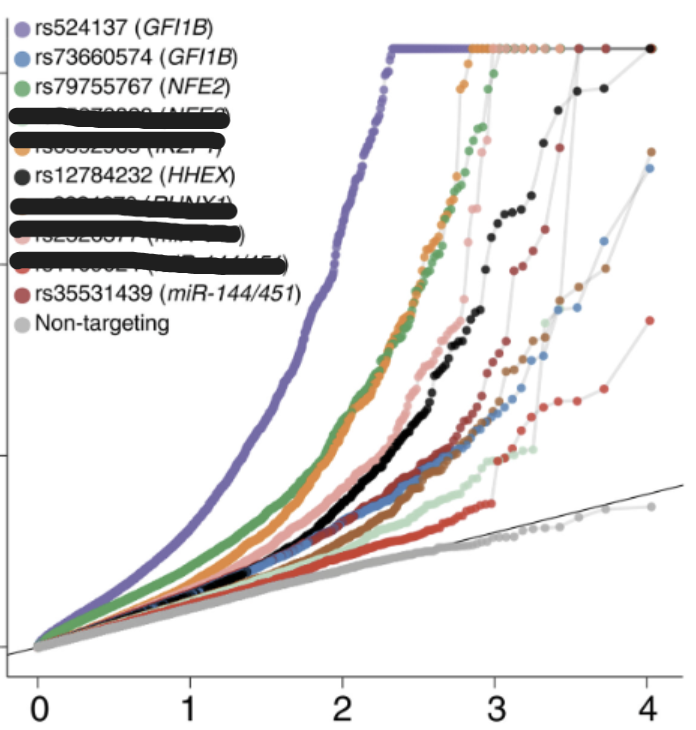
| Version | Author | Date |
|---|---|---|
| fc1169d | jliucx | 2024-10-21 |
sessionInfo()R version 4.1.0 (2021-05-18)
Platform: x86_64-pc-linux-gnu (64-bit)
Running under: CentOS Linux 8
Matrix products: default
BLAS/LAPACK: /software/openblas-0.2.19-el8-x86_64/lib/libopenblas_haswellp-r0.2.19.so
locale:
[1] LC_CTYPE=en_US.UTF-8 LC_NUMERIC=C LC_TIME=C
[4] LC_COLLATE=C LC_MONETARY=C LC_MESSAGES=C
[7] LC_PAPER=C LC_NAME=C LC_ADDRESS=C
[10] LC_TELEPHONE=C LC_MEASUREMENT=C LC_IDENTIFICATION=C
attached base packages:
[1] stats graphics grDevices utils datasets methods base
other attached packages:
[1] readr_1.4.0 dplyr_1.1.4 ggplot2_3.5.1 workflowr_1.7.1
loaded via a namespace (and not attached):
[1] tidyselect_1.2.0 xfun_0.45 bslib_0.7.0 colorspace_2.1-0
[5] vctrs_0.6.4 generics_0.1.3 htmltools_0.5.8.1 yaml_2.2.1
[9] utf8_1.2.1 rlang_1.1.2 jquerylib_0.1.4 later_1.2.0
[13] pillar_1.9.0 glue_1.6.2 withr_2.5.2 lifecycle_1.0.4
[17] stringr_1.5.1 munsell_0.5.0 gtable_0.3.0 evaluate_0.23
[21] labeling_0.4.3 knitr_1.48 callr_3.7.6 fastmap_1.1.1
[25] httpuv_1.6.1 ps_1.7.5 fansi_1.0.5 highr_0.11
[29] Rcpp_1.0.12 promises_1.2.0.1 scales_1.3.0 cachem_1.0.8
[33] jsonlite_1.8.7 farver_2.1.1 fs_1.6.3 hms_1.1.0
[37] digest_0.6.33 stringi_1.6.2 processx_3.8.4 getPass_0.2-2
[41] rprojroot_2.0.4 grid_4.1.0 cli_3.6.1 tools_4.1.0
[45] magrittr_2.0.3 sass_0.4.9 tibble_3.2.1 crayon_1.5.2
[49] whisker_0.4.1 pkgconfig_2.0.3 ellipsis_0.3.2 rmarkdown_2.27
[53] httr_1.4.2 rstudioapi_0.15.0 R6_2.5.1 git2r_0.32.0
[57] compiler_4.1.0